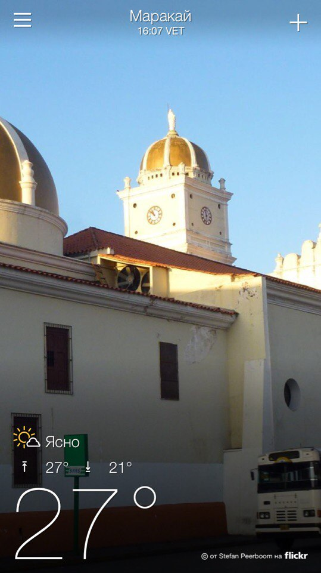
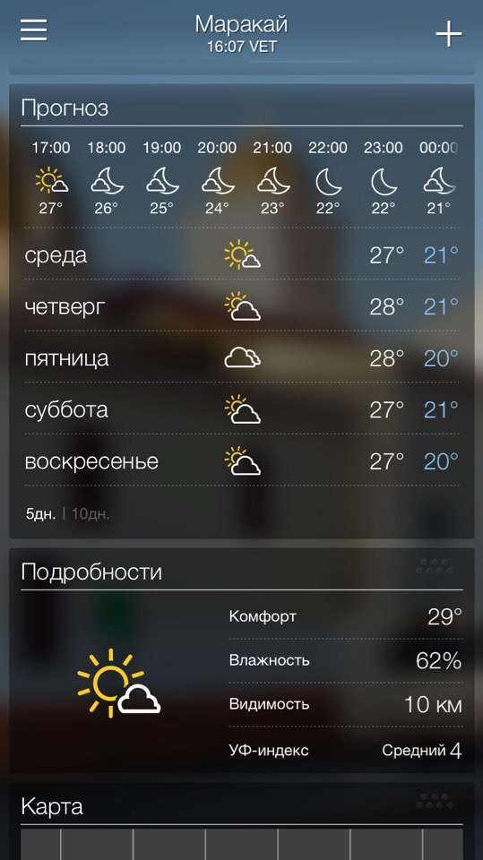
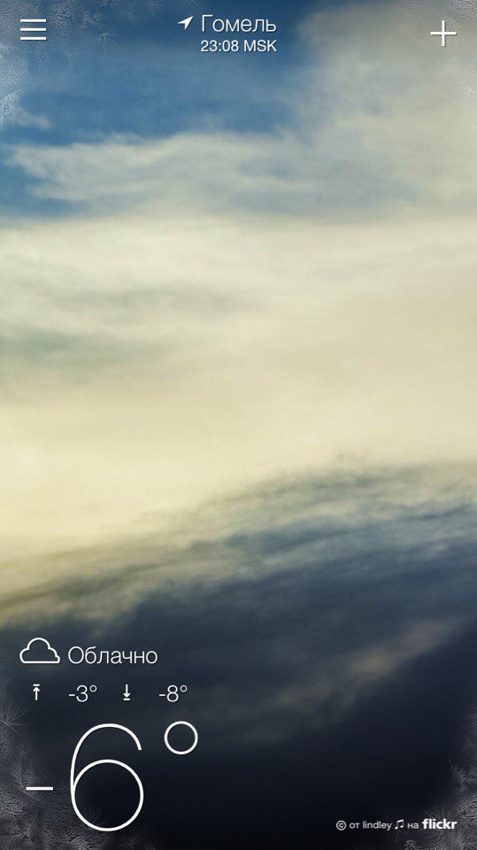

Не замерзнете
А почему?
Ну это смотря где. В Маракае точно нет. Климат в этой стране удивительный. На юге страны экваториальный, на севере – субэкваториальный. Вся территория страны расположена в пределах тропической зоны Южной Америки, крайняя южная точка страны находится в 80 км к северу от экватора. Однако благодаря высотным различиям климат варьирует от удушающей жары на Карибском побережье до постоянного холода в поясе вечных снегов в Андах. Температуры мало изменяются в течение года и зависят в основном от высоты местности. Маракай в этом плане был идеален - если грубо, то днем всегда 30 градусов, а ночью 20. Штаны надеваются лишь на работу или в ресторан. Без кондиционера невозможно. Иногда бывали перебои с электичеством, например во время сильной грозы могло обесточить весь район. Приходилось открывать все окна-двери дабы сделать сквозняк иначе дышать становилось тяжело.
  Но бывает и такое
Мы уже в западном регионе. Там, среди потрясающих пейзажей Анд, на высоте 1500 метров располагается Мерида — город университетов и парков. Основное население Мериды составляют студенты и профессора. Это тихий город в горах, по которому приятно прогуливаться, отдыхая в многочисленных городских парках. Здесь прохладно и надо носить куртку.

 наверх
наверх